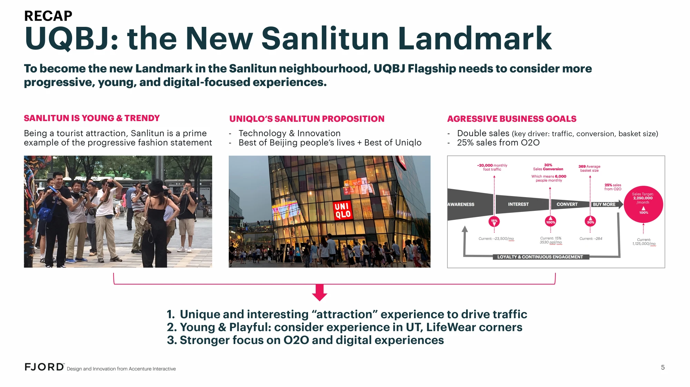
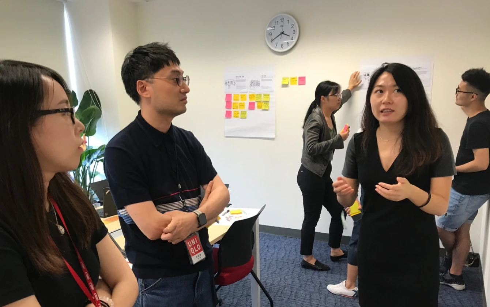
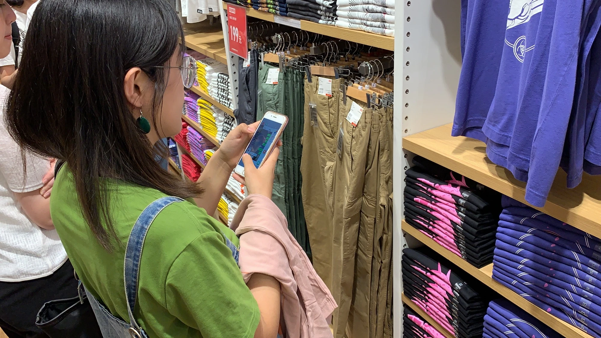
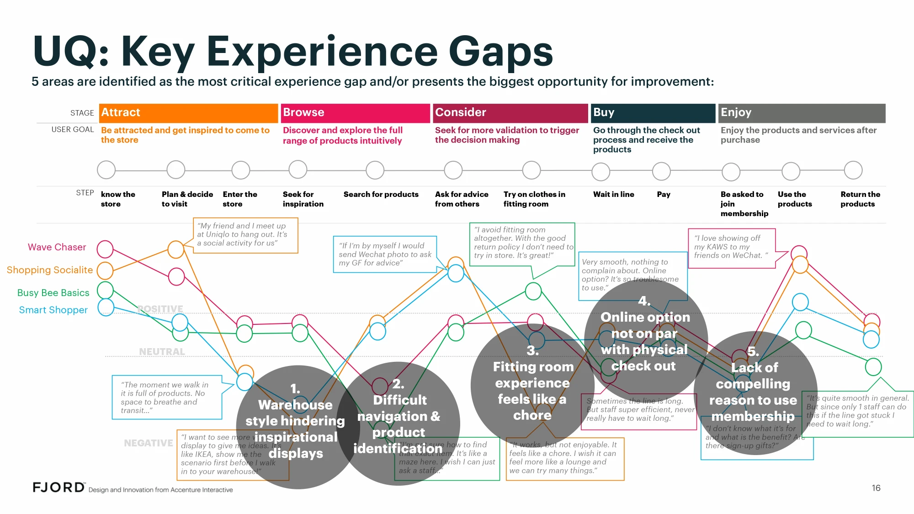
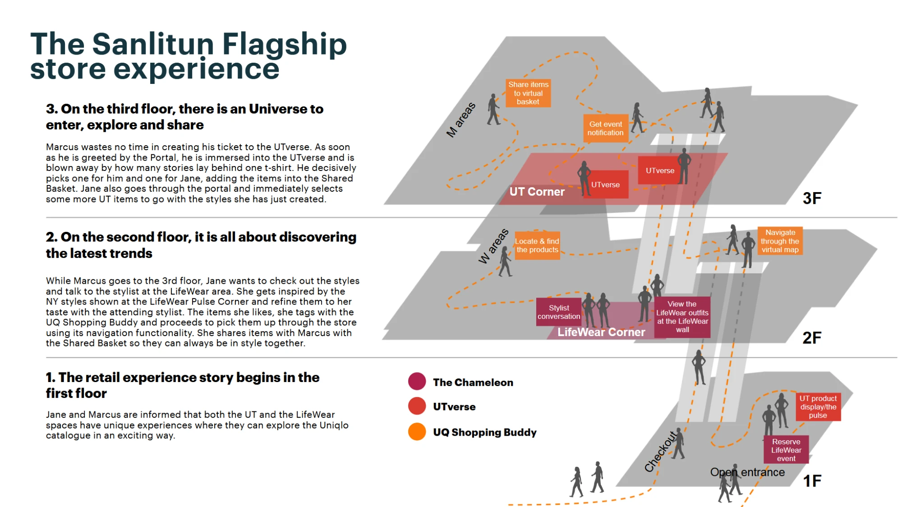
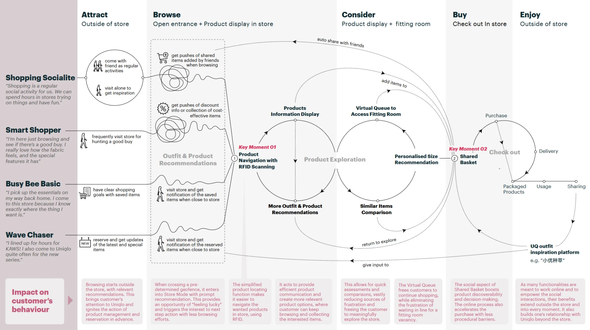
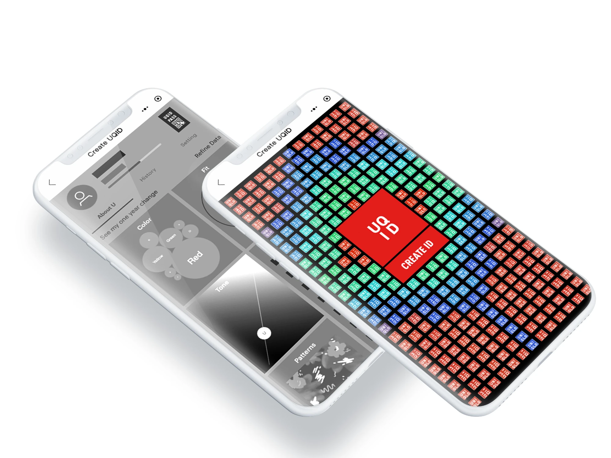
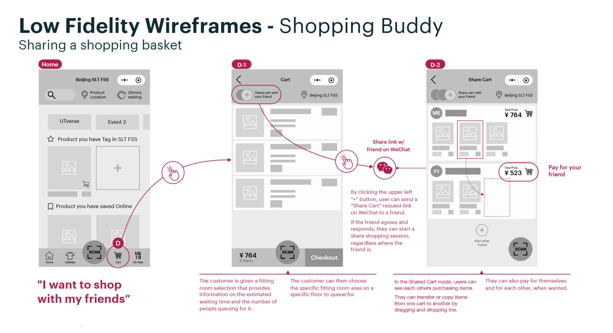
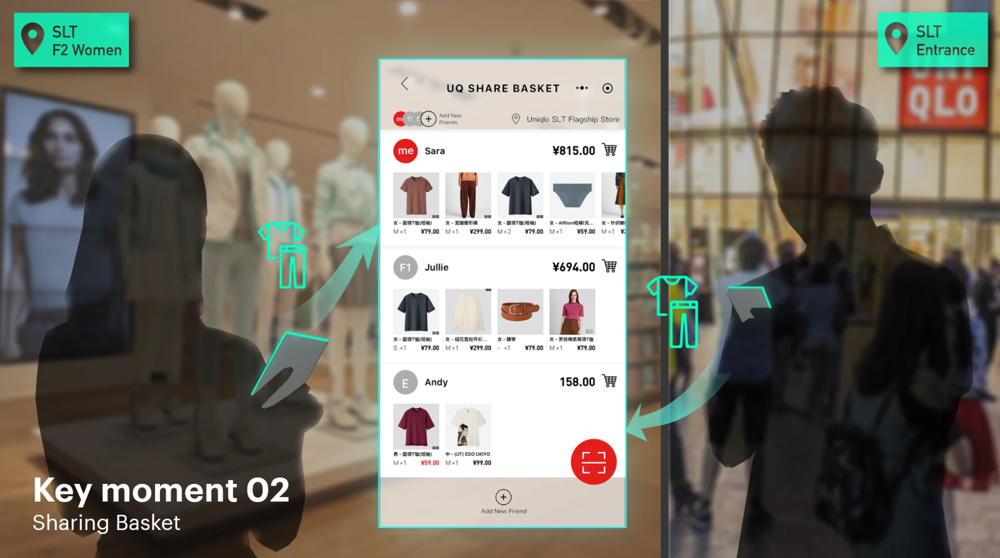

Uniqlo Flagship store experience
Building the next flagship experience for retail through Physical + Digital solutions for increased customer engagement and conversion

Project overview
Timeframe
06 months
My role
- Full-stack lead designer
- Design manager
Tasks
- Stakeholder management
- Design team management
- Product requirements definition
- Service design research lead
- Design direction (Service/UX/UI)
- Design strategy and implementation
- Design quality assurance
Challenge
Uniqlo was moving its flagship store at the fashionable Sunlitun neighborhood in Beijing to a new location and wanted to enhance conversion rates to boot. Its strategy was to innovate on how its physical and digital presence could coalesced into new ways of how customers experienced the brand.
To achieve this, I lead a team of designers and tech consultants in researching and evaluating the current setup, customers expectations and experiences, and in designing overlapping complementary experiences to involve and delight.

Understanding the setup
Research
It was vital to the success of this project to correctly assess the expectations from customers and stakeholders, given the ambitious goals. And understanding both what needed to be done from a customers perspective and what made sense to be done from a brand perspective was key.
Apparel Mindsets
Through our research, we discovered 2 distinct dimension that guide customers during their shopping. From that,
4 Mindsets emerged, representing their unique sets of needs and expectations.
Business values, applied to the project
The product is the hero
Nothing should distract or move focus from Uniqlo products.
Warehouse style is brand
Any issues that arise from it has to be solved while respecting it.
No
compromises
We have to solve issues without breaking what already works.
Identifying the best opportunities
We described the typical customer journey and collated it with customer insights focused in our 4 mindsets. This gave us a map to their success stories and pain points and information on what were the solutions needed and how should we prioritize them.



Creating a holistic Physical + Digital Uniqlo experience
Design
More than 80 first ideas were systematically combined and prioritized into 3 main concepts across digital and physical mediums. Combined, they created an empowering and engaging experience for customers while transforming pain points into delightful moments.
Research-based solutions mapped into the framework
Every experience concept was built in the framework of 5 retail stages and the 4 uncovered mindsets. Better yet, we designed them to compliment each other in an integrated way, multiplying their impact. These experiences were to allow Uniqlo to learn and better serve their customers, and to allow the customers to learn about themselves as well and better explore their fashion wishes and needs (one example follows bellow).
UQID - a profile that helps its user
Every experienced we designed was complimented by digital services and capabilities, and all of them were governed by the individual customer UQID.
Finding, experimenting, and sharing with friends
From finding the right product in store, booking a fitting room, to sharing a complete virtual shopping experience with friends, customers would have more ways to enjoy their shopping time.




